Theme
Local co-op • 2D • Narrative-driven • Detective • Strategy
Responsibilities
- Designed the core mechanic and game loop
- Designed the dialogue system
Context
Web of lies is a small game jam project my team and I created for the 2025 Unwrap jam. The jam lasted for about two days, and the theme was "Spreading it". I was one of two game designers.
Game
In this game, you and a friend find yourselves in an office with a detective. Neither of you know why you're there, a sudden case of amnesia? Whatever it may be, the detective questions you both about a murder case, and he wants answers now! You'll both need to come up with an alibi and stick to it, while also remembering each other's story.
The core gameplay involves answering the detective's questions by picking from a set of options in real time, while trying to stay consistent with the alibi you created together. This game tests the players memories and trust.
Can you keep your stories straight, or will you get caught in your own web of lies? Will you rat out your friend for a crime you might not have even commited or will you stick together until the end?
Important note
This game is still in development due to several bugs and technical issues
that currently make it difficult to play properly.
Because of this I will mostly focus on discussing the design choices behind the game.
However, I wanted to share it because it ranked 2# for best idea out of 30 in the jam, and
I'm confident that once the bugs are fixed, the game will really shine.
Core design Choices
-
Suspicion meter
Each player has a suspicion meter that shows how suspicious they are at any moment. The meter is simple,
A wrong answer will increase the player's meter, and if it becomes full, the detective will assume they're guilty.
A correct answer will decrease the meter, and if it becomes empty, the detective will assume they're innocent.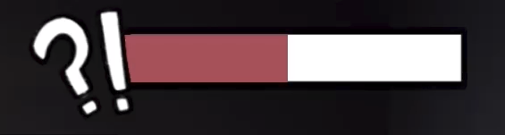
-
Core questions structure
We wanted to include a variety of questions, but before that, we needed to establish the core questions structure. Each question falls into one of four one core categories, each with four possible answers.
-
Who?
These questions asks what the player's job is. This is a simple way of giving the player an identity without needing a full backstory.
-
What?
These questions asks what activity the player was doing at the time of the murder.
-
Where?
These questions asks the player's location during the time of the murder.
-
Relationship
These questions asks what the player's relationship to the victim was.
To help the detective quickly and easily focus on and refer to a specific player, we gave each character a unique name.
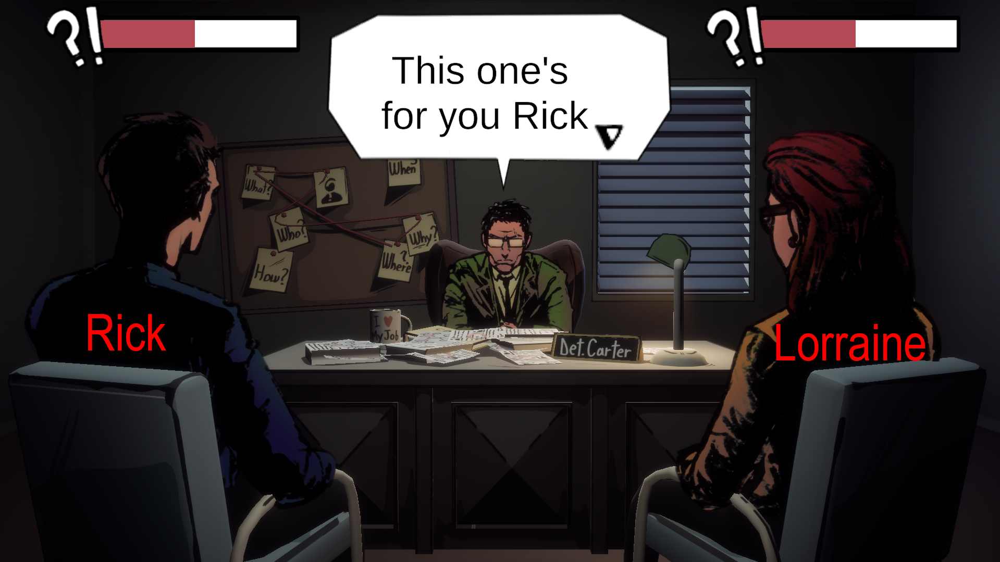Each player also gets the same questions but in different orders, to prevent players from just copying previous answers.
-
-
Two phases
The game is divided into two phases, both of which use the same core questions as a base:
-
The story building phase
Both players build their alibi by answering the detective's questions.
The questions in these phase are short and simple, designed to gather the core information. -
The questioning phase
The detective tries to catch one of the players in a lie by questioning what was said earlier and looking for any inconsistencies.
This phase really tests players. They must remember their answers from the first phase to correctly answer in this phase.
Design choices for phase two questions:
-
Sometimes, players get asked yes or no questions, which have two possible answers. These usually has the detective make an assumption that the player either confirms or denies.
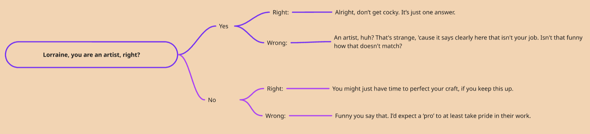 -
Every question, the detective responds based on whether the answer was correct or not to make it seem more like a real interrogation. The detective's responses is a mix between serious and funny to keep the overall tone light. Sometimes, the detective asks a small follow up question.
-
Beyond the basics, we've also designed some questions to make the players challenge their memory, loyalty and trust in one another.
-
Question one player about the other
These are the simple basic questions from before but now they are asked to one player about the other. This forces the players to try to remember each other alibi, not just their own.

-
A chance for betrayal
Some questions allow players to betray each other.
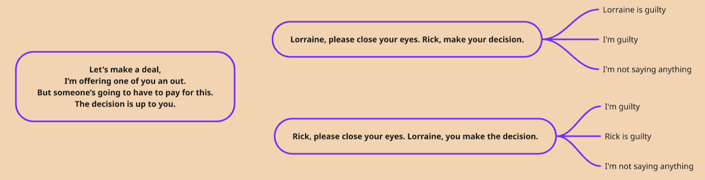 -
Trust questions
These questions challenges the trust between the players.
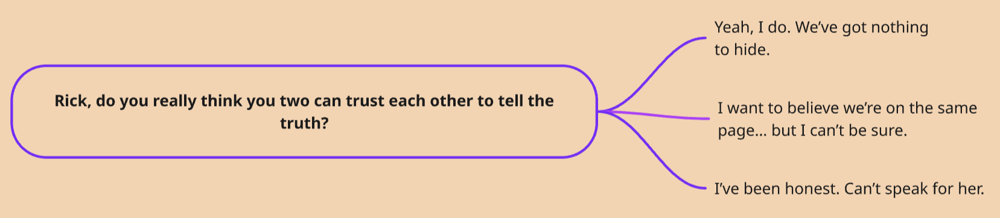
-
-
-
-
Multiple endings:
We build tension between the players by giving them some opportunities to betray each other. This mechanic leads to four possible endings:
-
Player 1 gets caught, while player 2 is free
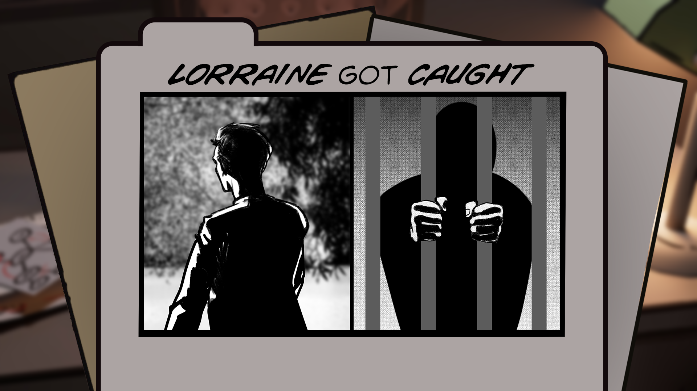 -
Player 2 gets caught, while player 1 is free
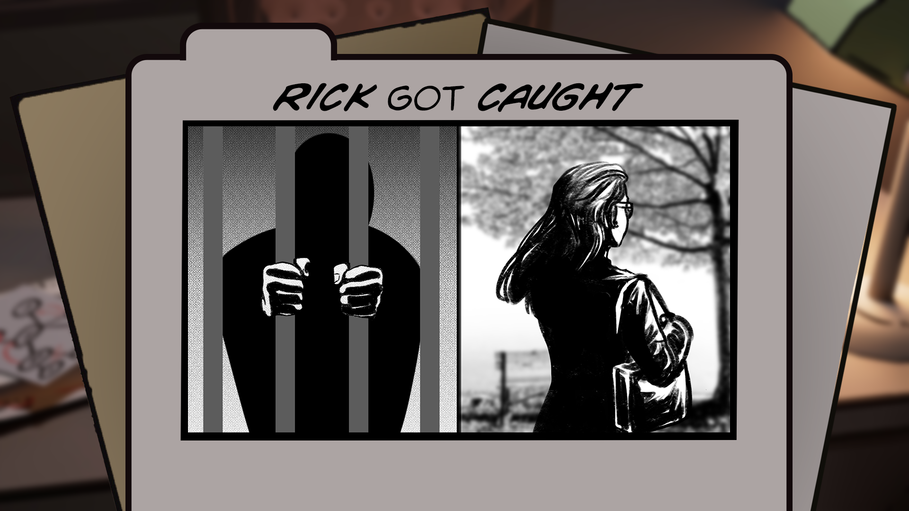 -
Both end up free
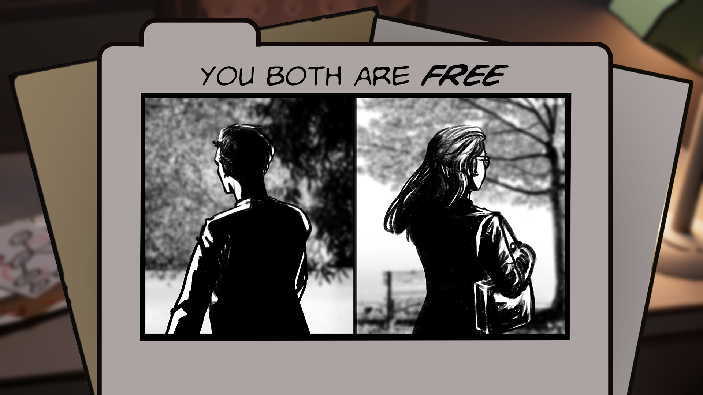 -
Both end up caught
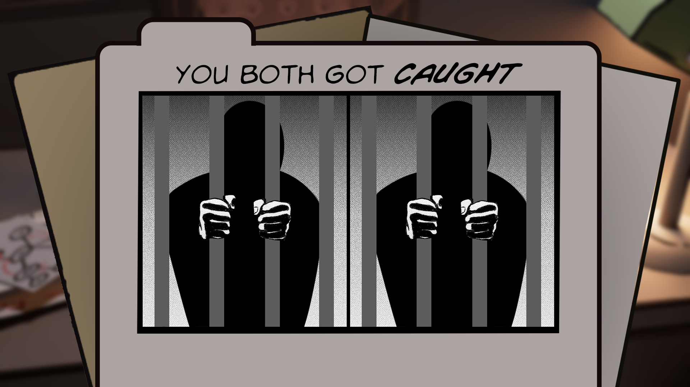
-
-
Controls:
We were inspired by the Wii Party friendship test controls. The core concept was that both players had to answer the same questions without knowing what the other answered until the answers were revealed. We thought this was a great way to allow players to possibly betray each other, for example, one player blaming the other player.
We planned on implementing this concept with xbox controllers. However, due to time constraints, we weren't able to implement this.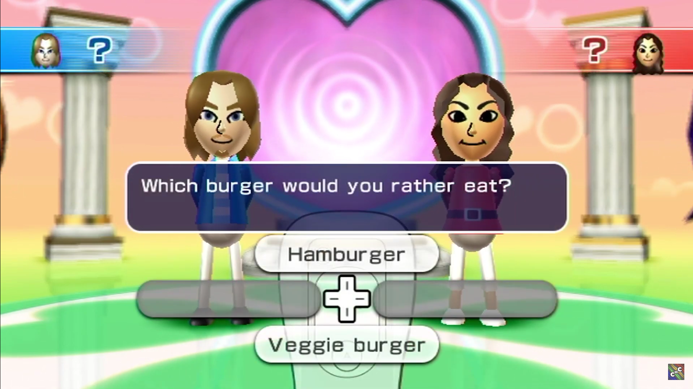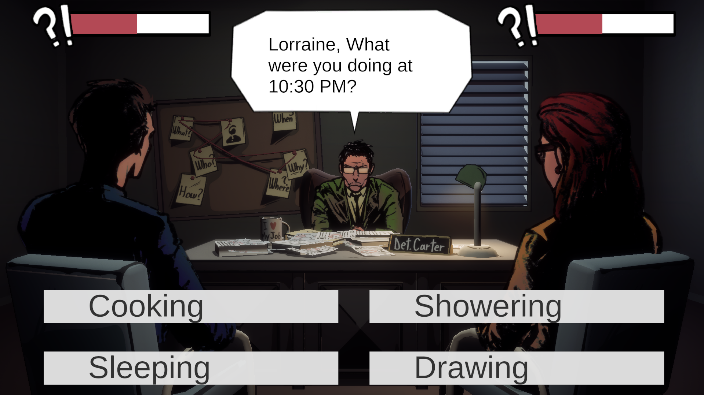
Instead, the players share one mouse, switching it whenever it's their turn to answer.
Software and tools
- Miro for brainstorming and documentation.
- Unity as the engine.